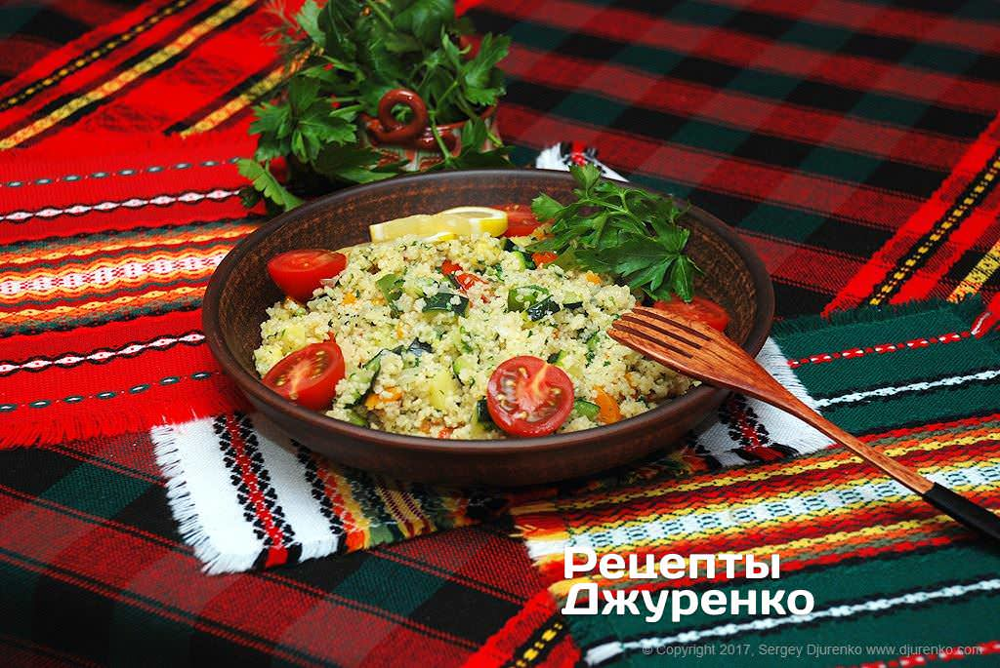
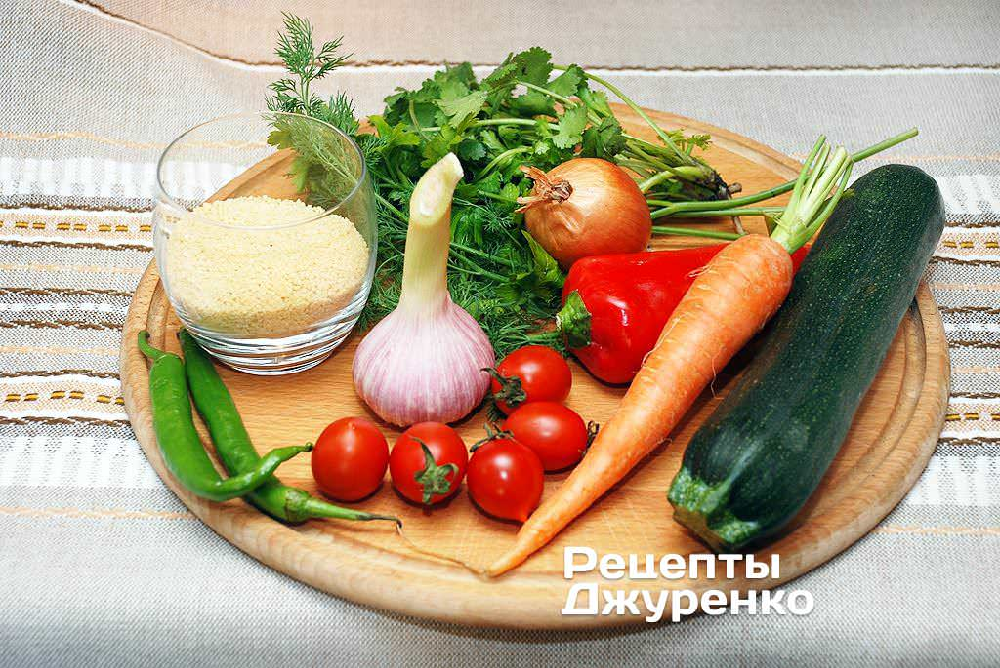
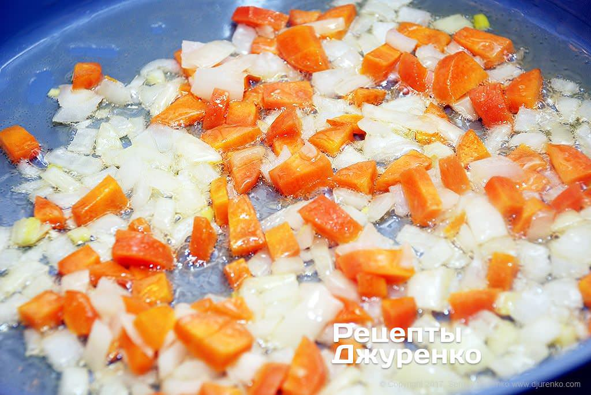
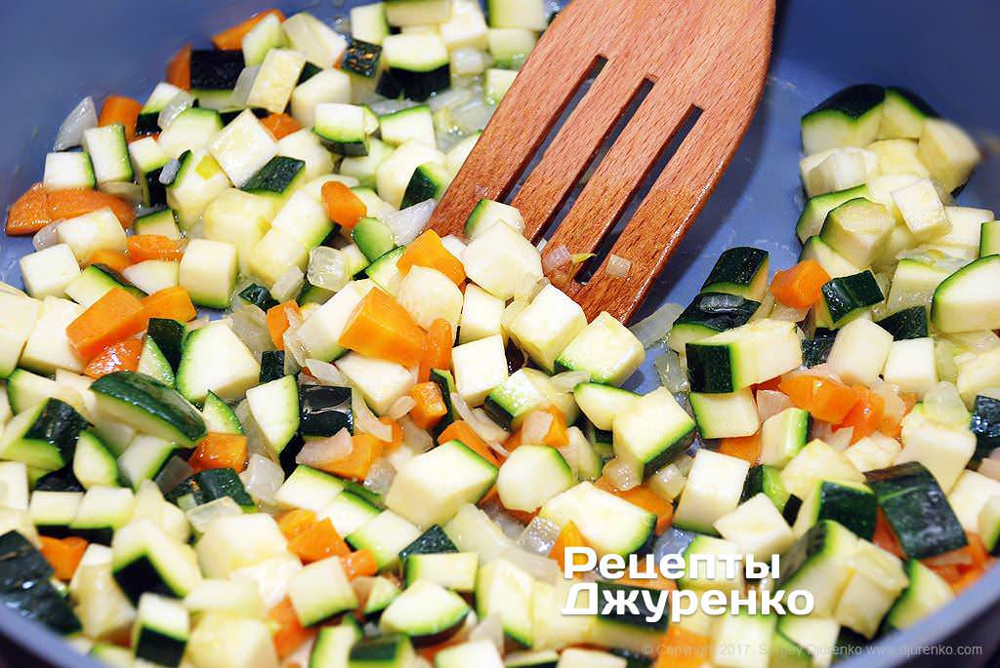
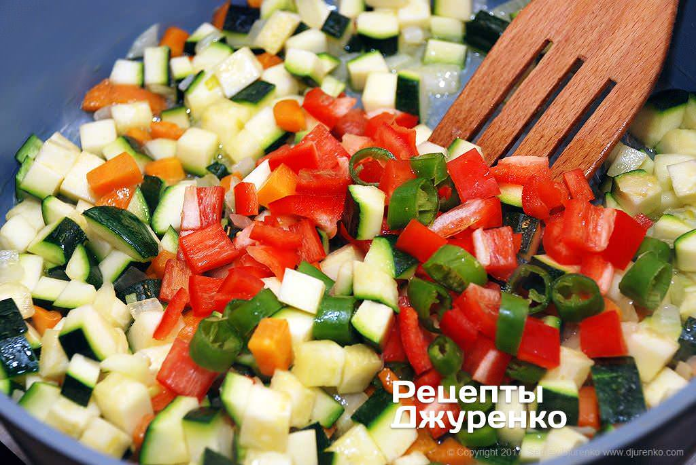
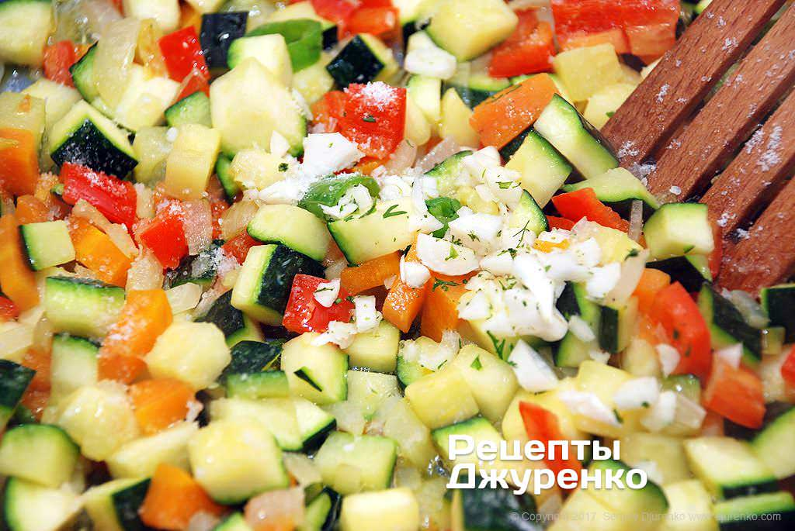
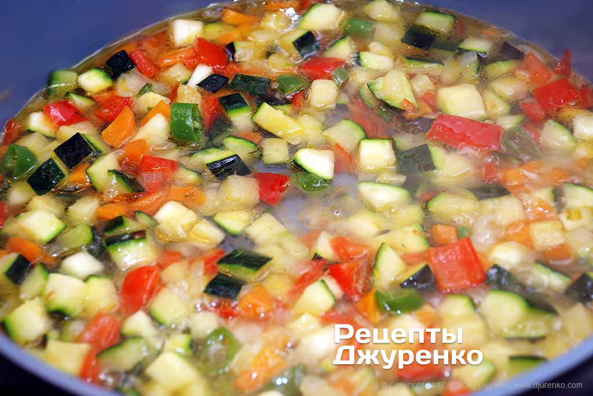
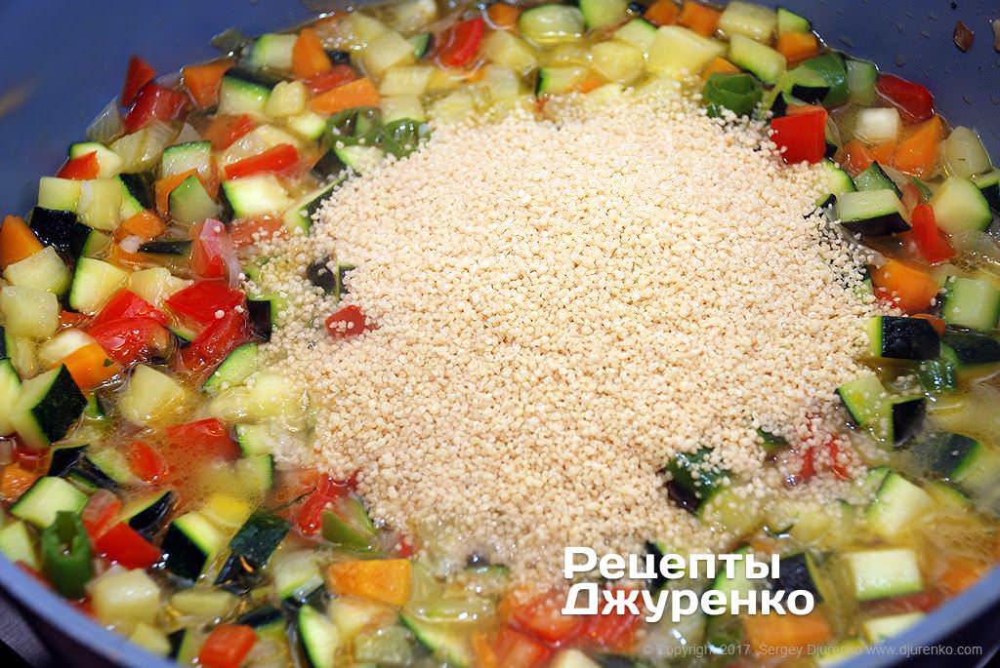
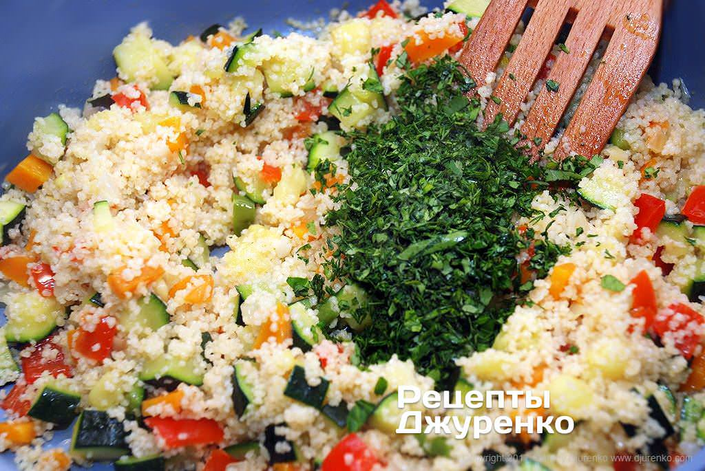
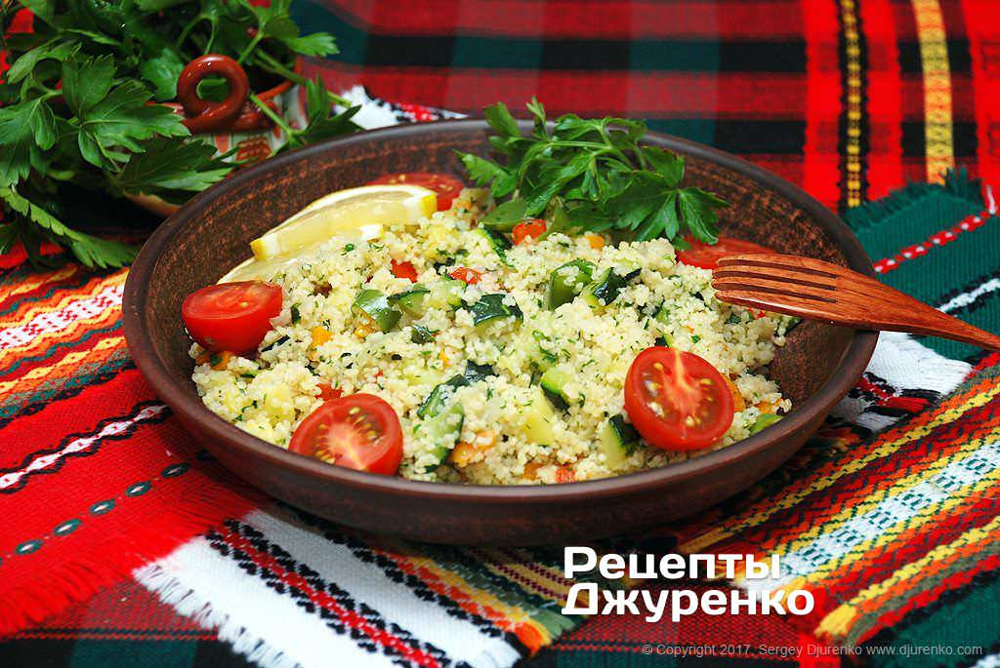

Кускус с овощами в ароматном бульоне
30 мин; 11 ингридиентов; 11 фото;

Ингридиенты для кускуса с овощами
(2 порции)
- Кускус - 1 стакан
- Лук - 1 шт
- Морковка - 1 шт
- Перец сладкий - 1 шт
- Перец острый - 1-2 шт
- Кабачок - 1 шт
- Помидоры - 3-4 шт
- Чеснок - 3 зубчика
- Куриный или овощной бульон - 1 стакан
- Сборная зелень - 0,5 пучка
- Растительное масло - 4 ст.л
- Соль, лимон
Пошаговый рецепт кускуса с овощами
- В зависимости от сезона, кус-кус с овощами может сильно меняться по составу и количеству тех или иных овощей.
В самом простом варианте, особенно зимой, в блюдо достаточно добавить морковку, лук и свежую зелень.
Блюдо может готовиться с мясным или куриным бульоном, или быть полностью вегетарианским — по желанию.

- В глубоком сотейнике разогреть растительное масло — лучше оливковое. Морковку и лук очистить.
Морковку нарезать кубиками, размером как нарезаются овощи для винегрета. Лук нарезать достаточно мелко.
Одновременно обжарить морковку и лук в разогретом масле на сильном огне в течение 4-5 мин.

- Небольшой молодой кабачок или цуккини нарезать кубиками. Если кабачки очень молодые, их можно не очищать.
Более зрелые кабачки очистить и удалить семена, если они успели сформироваться. Нарезать кабачок кубиками
приблизительно вдвое крупнее, чем для оливье. Кстати, стоит сказать, что лучше, если кус-кус будет с почти
одинаково нарезанными овощами.

- Сладкий перец очистить от семян и нарезать небольшими ломтиками или кубиками, если перец достаточно мясистый.
Острый перец нарезать колечками и удалить семена. Количество острого перца по вкусу. Добавить нарезанный кабачок
и
перец к обжаренному луку с морковкой, перемешать и, часто перемешивая, обжаривать все овощи в течение 6-7 мин.

- Чеснок очистить и крупно нарубить ножом. Добавить чеснок к овощам и посолить по вкусу.
Добавить 1 стакан бульона — мясного, куриного 0или овощного. В самом простом случае можно добавить обычную воду.
Довести жидкость до кипения и тушить овощи 2-3 мин. На этом приготовление овощной части блюда закончено.

- Далее, у вас есть варианты. Можно сварить кускус на пару, как это делают на Востоке, и подать на большом блюде,
выложив овощи поверх — так подается кускус с курицей. Но, в условиях домашней кухни, как правило, пароварку
мало кто держит в кухонном инвентаре. Поэтому, это намного проще, предлагаю второй вариант.

- Сразу после того, как бульон с овощами закипит, добавить сухой кускус и перемешать. Накрыть сотейник крышкой,
убавить огонь до минимума и оставить кус-кус с овощами на 4-5 мин. Затем огонь выключить, крупу и овощи еще раз
перемешать и оставить еще на 4-5 мин. После этого кускус полностью поглотит всю жидкость и станет рассыпчатым
как рис с овощами.

- С веточек зелени: петрушка, укроп, кинза — оборвать все листики, а стебли выбросить.
Зелень мелко нарубить ножом и добавить в кус-кус с овощами. По желанию, полить блюдо 1-2 ч. л. лимонного сока.

- Перемешать кус-кус с овощами и разложить на тарелки или на одно большое блюдо, которое удобно подавать к
семейному обеду.
Небольшие спелые помидоры разрезать пополам или дольками, и выложить их поверх готового блюда.

- Подавать кус-кус с овощами в качестве гарнира к мясным блюдам, гуляшу или тушеной рыбе. Впрочем,
блюдо прекрасно подходит в качестве основного для вегетарианцев.

Приятного аппетита!
Рецепт взят с сайта:
Душевные рецепты Сергея Джуренко